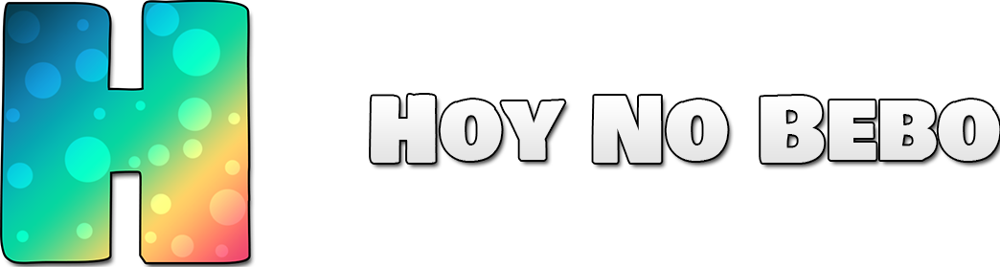

Muy buenas a todos y bienvenidos a la primera versión de Hoy No Bebo (es como si mi hijo acabase de nacer).
Esta primera versión viene cargada de contenido y lista para brindaros noches y noches de diversión. ¡Echemos un vistazo a las características de esta versión! Pero antes de nada vamos a hacer una pequeña revisión de nuestro logo y de nuestra tipografía:
Este es el logo que podrás encontrar en nuestras redes sociales y la fuente que encontrarás en la cabecera de este juego y muchas de nuestras publicaciones, las cuales os las dejamos a continuación. No dudes en seguirnos para estar atentos a todas las novedades y alguna que otra sorpresa 😚.
Además recordad que podéis contarnos cualquier cosa relacionada con vuestras fiestas y hacernos cualquier sugerencia de mejora o de prueba a través de los mensajes directos de ambas aplicaciones. Siempre estamos encantados de leeros.
Siguiendo con el contenido, esto es con lo que cuenta el juego en la presente versión:
Dicho esto no podemos expresar otra cosa que felicidad, pues lanzamos la primera versión de esta aplicación que creamos en un principio para disfrutarla con nuestro grupo de amigos pero que creímos que a muchas personas a lo largo del mundo les podría gustar, esperemos que os guste y que nos acompañéis en este bonito viaje. Un saludo de nuestra parte guapisímos/as.